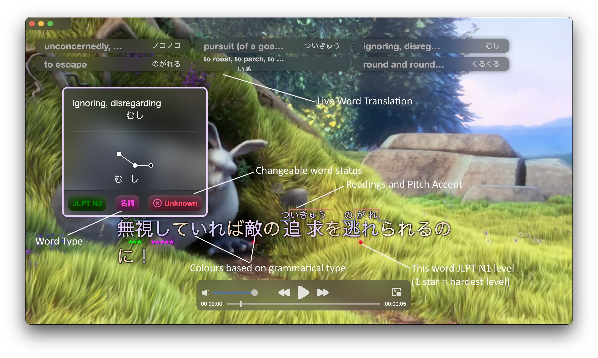

Supercharge your language learning journey by watching native content
Start watching your favourite media without English subtitles
mLearn automatically adapts to your language level for you to learn new vocabulary.

Features
Live word translation
Intelligent Features
Advanced SRS with automatic flashcard creation
Support for Pitch Accent
Adjustable Difficulty
Power Efficient & Offline Mode
Sync Subtitles with Video
Supports multiple languages
Grammatically Analyses subtitles
Quick Video Access * Placeholder Photos by Vladimir Fedotov on Unsplash
Streams any type of video
Supports Anki
Very Customizable
Watch Together with peers right in your browser!
The best part is:
Your peers don't have to install mLearn to use all of its intelligent subtitling features right in their browser.
If you're a teacher, you can control students' video player and enhance their learning.
A dark and a light mode
Watch your favourite content without blinding yourself

Live character reading
mLearn automatically adds readings (furigana,...) to unknown words
Customise subtitle colours based on grammar
mLearn automatically grammatically-analyses subtitles on the fly
Anki Support
Automatic flashcard fetching to provide more accurate word definitions and flashcard creation
Watch native content
Hover over words to view their definitions, or adjust your knowledge of them, whether you're on mobile or on PC/Mac.
Automatic Intelligent SRS
mLearn automatically creates flashcards for words that meet your goal.
It will automatically create relevant flashcards based on your studied language exam level.
Advanced knowledge insight
mLearn tracks how well you know vocabulary for different language exams.
Moreover, you have access to mLearn's internal database of knowledge, so that mLearn gets to know you better.
You can also personalize definitions.
How to Use
Just paste the URL of the video/streaming content you want to watch into the app. Drag'n'dropping it also works.
To add subtitles, just paste them/drag'n'drop them onto the video player.
What is what
Tutorials
Click here to watch tutorials.
Power efficiency
The app draws less power than Google Chrome, enabling you to watch your favourite media offline. The app is also well-suited to watch your favourite series on a plane flight.
System Requirements
MacOS, Linux, Windows with at least 8 GB of RAM.
mLearn components definitions
mLearn for PC/Mac: The main app with advanced grammatical analysis tools, the main server
mLearn Mobile Companion App: The SRS Flashcard that syncs with mLearn for PC/Mac
mLearn Tethered Mode: A script that's an injector tool, pasted in the browser console to integrate mLearn into your streaming service, available to copy using the "Connect" menu in mLearn for PC/Mac.
mLearn Mobile: UserScript that allows you to use mLearn on mobile devices, available to install using the "Connect" menu in mLearn for PC/Mac.
List of Features
Live word translation & on the fly live grammatical analysis
Watch-Together mode (show media to your friends, teacher-students mode,...)
Knows what words you know, and adjusts itself based on that.
Advanced automatic flashcard creation
Advanced language features (Pitch accent, readings, exam preparation,...)
Language exam study mode (f.ex. JLPT-oriented vocabulary selection) to help you ace your exam.
Custom Flashcard SRS System (mLearn Mobile Companion App & SRS system in mLearn for PC/Mac)
Advanced Exam vocabulary knowledge statistics
Access to an internal database to edit word definitions
Seamless integration with Anki
Known word blurring
Power-efficient and offline mode
Supports Japanese & German
Streams any type of video
Very customizable
Support for custom languages
Open-Source